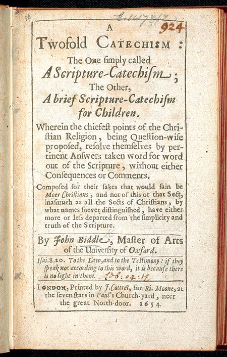
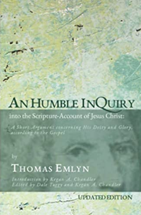
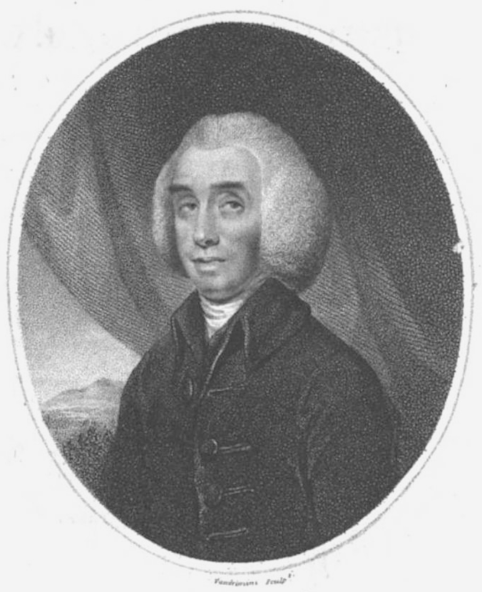
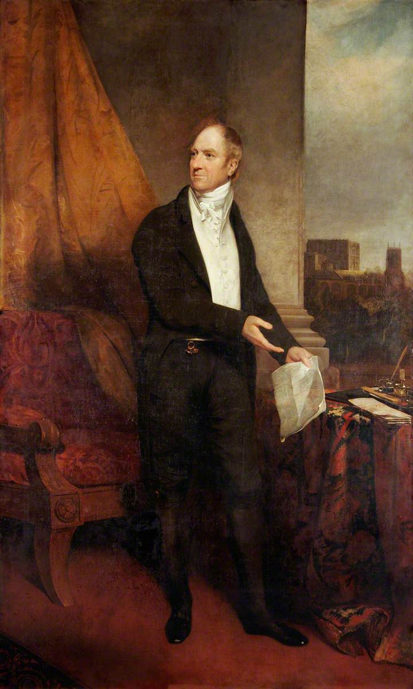
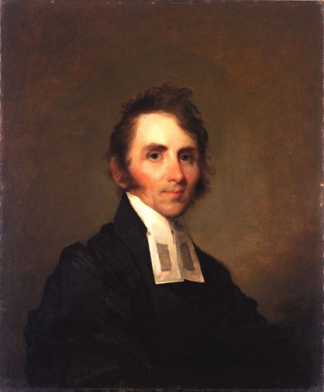
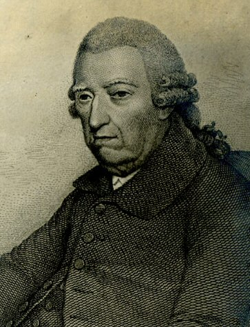
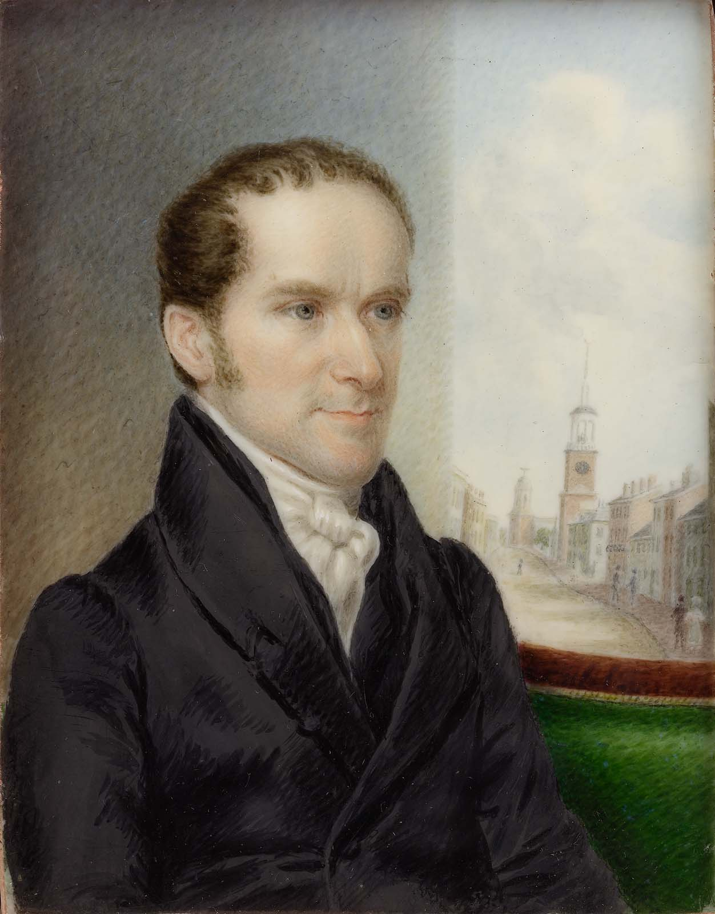
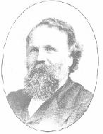
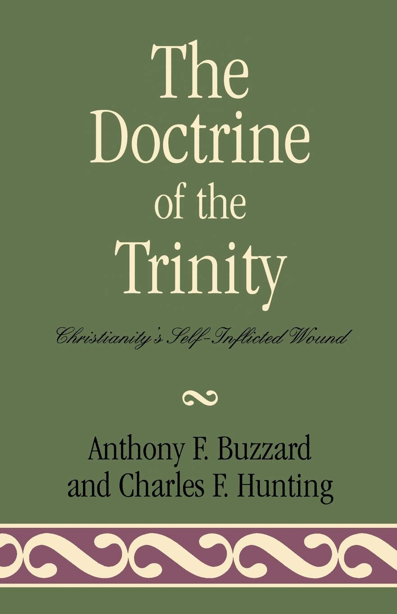
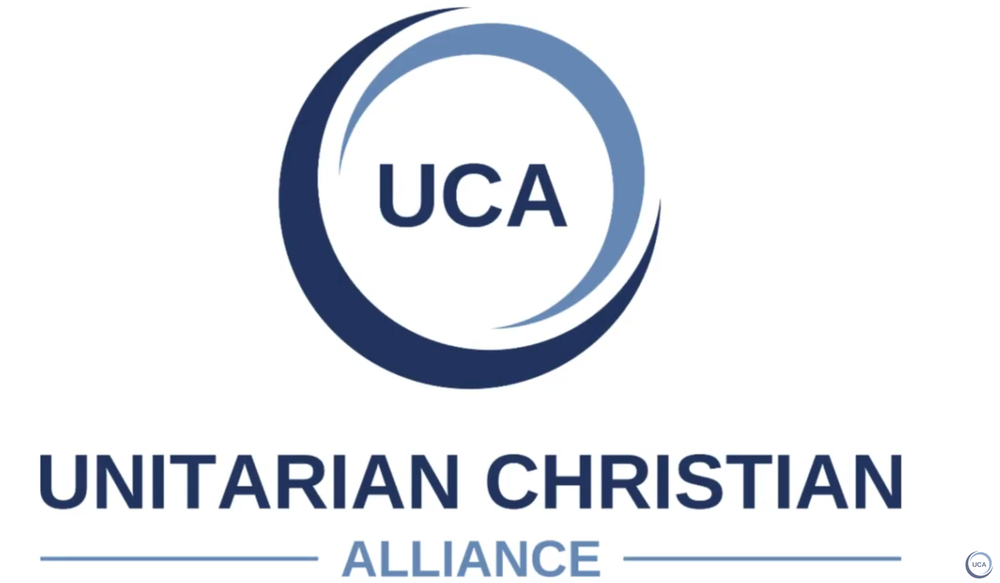

-
John Biddle
John Biddle (1615-1662), was a distinguished British academic, graduate of Oxford, and at the age of 26 elected headmaster of Crypt Grammar School in Gloucester, England. As he was tasked with teaching Scripture, he thoroughly studied the Bible and adopted a Unitarian view of God, despite no exposure to Unitarian publications. This belief led to six imprisonments in his lifetime due to his teachings and writings against the concept of the Trinity. Parliament eventually made denial of the doctrine of the Trinity a capital offence in 1648. Biddle, however, escaped the death sentence because in 1655 Lord Protector Oliver Cromwell banished him to the Scilly Isles. Released in 1658, he presided over a small group of disciples who met regularly in London. Subsequently, he was sent to prison in Newgate in 1662 and died there in September that year, aged 47.
Biddle became known as the 'father of English Unitarianism.' Here is a sample of his teaching :-
John 17:3. "This is eternal life, that they know thee (Father) the only true God, and Jesus Christ whom thou hast sent." Observe here in the first place, that our Saviour Christ, setting down those persons, in whom eternal life consists, makes no mention of the Holy Spirit; whereas, if he were [the one] God, the knowledge of him would be as necessary for the attainment of eternal life as that of the Father. Secondly, he so describeth the Father, as that he makes him the only true God, thereby manifestly excluding any other person whatsoever from being the true God. -
Thomas Emlyn
Thomas Emlyn (1663-1741) was a beloved minister in a Presbyterian church in Dublin, Ireland. After investigating some recent controversies about "the Trinity," Emlyn found himself seeing the New Testament in a unitarian light. Emlyn was the first preacher who described himself as a unitarian. Among his many writings, in 1702, he published An Humble Inquiry into the Scripture-Account of Jesus Christ: A Short Argument concerning His Deity and Glory, according to the Gospel. This book which led to Emlyn's conviction and imprisonment by the English government for blasphemy, is a succinct and erudite argument for the subordination of Jesus Christ to God the Father.
An updated, scholarly edition of this book is now available.
Please listen to the following podcast which presents some excerpts of this new publication:
Emlyn's Humble Inquiry. -
Sir Isaac Newton
Sir Isaac Newton FRS (25 December 1642 - 20 March 1727) was an English mathematician, physicist, astronomer, theologian, and author. After Newton's death, it was discovered that he wrote about theology more than he did about his scientific works. That is, he wrote about 1.3 million words on biblical subjects. In the twentieth century, encrypted manuscripts written by Newton and bought by John Maynard Keynes (among others) were deciphered and it became known that Newton did indeed reject Trinitarianism.
Therefore, from his private writings, it is clear that for Newton, the "supreme" God is the Father alone.
To quote Newton's Twelve articles on religion :--
1) There is one God the Father everliving, omnipresent, omniscient, almighty, the maker of heaven & earth,
& one Mediator between God & Man the Man Christ Jesus.
3) The Father hath life in himself & hath given the son to have life in himself.
6) All the worship (whether of prayer praise or thanks-giving) which was due to the father before the coming of Christ is still due to him. Christ came not to diminish the worship of his father.
12) To us there is but one God the father of whom are all things & we of him,
& one Lord Jesus Christ by whom are all things & we by him.
That is, we are to worship the father alone as God Almighty &
Jesus alone as the Lord the Messiah the great King the Lamb of God who was slain & hath redeemed us with his blood & made us kings & Priests.
-
Theophilus Lindsey
Theophilus Lindsey (20 June 1723 - 3 November 1808) was an English theologian and clergyman who founded the first avowedly Unitarian congregation in England, at Essex Street Chapel, London.
After learned, calm and diligent inquiries in Scripture regarding the warrant for Trinitarian worship; he says, "the more I searched the more I saw the little foundation there was for the doctrine commonly received" (that is, the doctrine of the Trinity) ... "For, in the end, I became fully persuaded, to use Paul's express words,
1 Corinthians 8:6 'That there is but one God, the Father,' and he alone to be worshipped. This appeared to be the uniform, unvaried language and practice of the Bible throughout."
Subsequently, Lindsey intended to open a chapel upon principles strictly Unitarian.
On Sunday, April 17, 1774, the chapel was opened. Thus in London, Essex Street Chapel, also known as Essex Church, was the first church in England set up for Unitarian worship and doctrine, and was established when Dissenters still faced legal threat. A picture of its interior with congregation can be seen on the first page of this website as well as in the Gallery. -
Doctrine of the Trinity Act
William Smith (22 September 1756 - 31 May 1835) was a leading independent British politician who held strong dissenting Christian convictions - he was a Unitarian, and was thus prevented from attaining the Great Offices of State. He was a member of the Essex Street Chapel.
In 1813 Smith challenged the established church, and was responsible for championing the Doctrine of the Trinity Act, known as 'Mr William Smith's Bill', which, for the first time, made it legal to practice Unitarianism. This Act of the Parliament of the United Kingdom amended its blasphemy laws and granted toleration for Unitarian worship. -
William Channing
Dr. William Ellery Channing (1780-1842) has been called "the apostle of unitarianism." It was not until 1812 that the Unitarian controversy first rose into importance in America. It began among the Congregationalists of Boston and it presently fixed the name of Unitarians upon a large body of people all over the country. A series of attacks made upon the ten Congregationalist churches in Boston in the periodical papers of the day called into being a magazine to promote Unitarianism. This magazine, the first Unitarian paper in America, was "The Christian Disciple," started in 1812. In its pages Channing and several other able writers set forth their Unitarian opinions.
At the ordination service for Jared Sparks in Baltimore, Maryland in 1819; Channing presented his famous sermon, "Unitarian Christianity." In it, Channing explains what unitarian Christians think the Bible teaches about the one God and his unique Son. He argues both from what the Bible says and from what it doesn't say. Please listen to the following podcast which presents the first portion of his sermon,
Unitarian Christianity. -
Baron Francis Maseres
Francis Maseres (15 December 1731 - 19 May 1824) was an English lawyer. He is known as attorney general of the Province of Quebec, judge, mathematician, historian, member of the Royal Society, and cursitor baron of the exchequer. Maseres describes his belief as follows:
"My creed is derived from my Saviour, and the time when and the manner in which it was uttered give it a title to pre-eminence. A few hours before his death, in an address to his Father, Christ says :--
'This is eternal life, to know Thee, the only true God, and Jesus Christ, whom Thou hast sent.'
This is my creed, and happy would it be for the Christian world if it had been content with it, and never laid down any other articles for a common faith."
The following lines, which condense the whole Trinitarian controversy, have been attributed to him :--
"Talk of essence, and substance, and no one knows what!
God either made Jesus, or else he did not:
If made, he's a creature, without more ado;
If not, he's God -- and then we have Two." -
Henry Ware Junior
Henry Ware Junior (April 21, 1794 - September 22, 1843) was an influential Unitarian theologian, early member of the faculty of Harvard Divinity School, and first president of the Harvard Musical Association. In the following lecture, Ware outlines the case for thinking the authors of the New Testament to be unitarian, rather than trinitarian, in their theology. Please listen to the following podcast which is
the 1834 edition of Ware's lecture. -
Robert Spears
In 1876, Robert Spears (September 25, 1825-February 25, 1899), published his book, Record of Unitarian Worthies. This book served as my primary source material for the individuals referenced in this timeline, from 1326 to 1824 inclusive.
Spears, a remarkably able and successful Unitarian minister, was the voice of Biblically-based British Unitarianism in his day. He organised or reinvigorated twelve congregations and founded journals and social service organisations. Because of his great energy he has been called the Unitarian dynamo of the 19th century. Amongst the majority of those who knew something of Unitarianism in Britain, he was taken to be the representative figure. Biblically-based Unitarians saw in him a new champion, one who would proclaim their beliefs from the housetops. Despite his lack of formal ministerial training, in 1861 Spears became minister to a tiny congregation at Stamford Street Chapel in South London. He steered the same course as before, making 'open profession, exposition, and defence of Unitarianism.' In seven years the chapel grew to be one of the largest Unitarian congregations in London.
He boasted, 'There was no dilly dallying about the name Unitarian.' -
Christianity's Self-Inflicted Wound
On August 1, 1998, Sir Anthony Buzzard (3rd Baronet) and Charles F. Hunting published the book
"The Doctrine of the Trinity: Christianity's Self-Inflicted Wound."
The authors challenge the notion that biblical monotheism is legitimately represented by a Trinitarian view of God and demonstrate that within the bounds of the canon of Scripture Jesus is confessed as Messiah, Son of God, but not God Himself.
This book, which holds immense influence, has resulted in a significant number of individuals abandoning Trinitarianism and adopting the Biblical belief of the existence of only one God, and that Jesus is a human being.
Sir Anthony Buzzard had also founded Restoration Fellowship. Therefore, the book is currently available for free online in Spanish, Czech, Serbian, Polish, Italian, Swahili, German, Turkish, Norwegian and Russian at this website.
Also free online is the booklet, "Who Is Jesus?" - again, available in various languages from the above website.
Additionally in 1998, Restoration Fellowship began publishing a free, monthly magazine titled
"Focus On The Kingdom." in order to facilitate the spreading of the Gospel of the Kingdom. -
21st Century
We have finally reached the 21st century. Thus, notwithstanding the use of the sword, the existence of laws in multiple nations, persecution, and the fear of death; the biblical truth about the one God and His human son continues to advance.
These amazing truths are now explained on a wide variety of websites that are readily accessible. I will list five here.
1) Restoration Fellowship 2) Kingdom of God Missions 3) 21st Century Reformation 4) Trinities 5) United Christian Alliance
Dear Reader, thank you for your time and consideration.